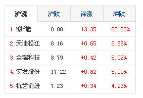
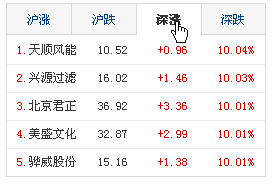

北京 · 11 月 2 日
城市更新收尾，老街区从"改造"转向"养护"

历时三年的街区改造本月完成验收。与以往不同的是，本轮工程把预算的三成留给后续维护，而不是一次性投入硬件。
改造覆盖十二个片区的管网、路面与公共照明。项目团队表示，居民最关心的不是外立面，而是雨天是否积水、夜间路灯是否够亮，因此验收从"完工照片"改为"运行记录"。
下一阶段维护责任移交给街道，每季度的巡检结果将对外公开。
北京 · 11 月 2 日

历时三年的街区改造本月完成验收。与以往不同的是，本轮工程把预算的三成留给后续维护，而不是一次性投入硬件。
改造覆盖十二个片区的管网、路面与公共照明。项目团队表示，居民最关心的不是外立面，而是雨天是否积水、夜间路灯是否够亮，因此验收从"完工照片"改为"运行记录"。
下一阶段维护责任移交给街道，每季度的巡检结果将对外公开。
省域 · 11 月 2 日

新的运行图自本周一起执行，覆盖省内四十三个县区的城乡线路，重点解决务工人员晚间返程问题。
城乡线路末班车普遍从十八时三十分延后至十九时三十分，山区线路增加一班夜间班次。运营方在十二个中转站增设候车照明与到站信息屏。
据统计，调整首周夜间客流较此前上升约两成，空驶里程相应下降。
国际 · 11 月 2 日
预警指出，今年冬季北大西洋暖流异常偏弱，北欧与北美东岸可能出现较常年更频繁的暴雪过程。
联合预警首次把电网负荷、交通调度与港口作业三项指标并列评估，并为每个区域给出分级响应建议。参与机构表示，单一的气温预报已不足以支撑决策，需要把基础设施的承受能力一并纳入。
相关数据将在下月以开放数据集形式发布，供各成员国的地方政府调用。
热榜 · 11 月 2 日
读者来信最集中的三个话题，都指向同一个词——"够用"。
通勤话题下，讨论焦点从"更快"转向"更稳"；菜价话题里，读者更关心价格波动幅度而非绝对高低；旧手机话题围绕换机周期拉长后的维修成本展开。
编辑部据此整理了三份读者提问清单，将在下周版面逐条回应。